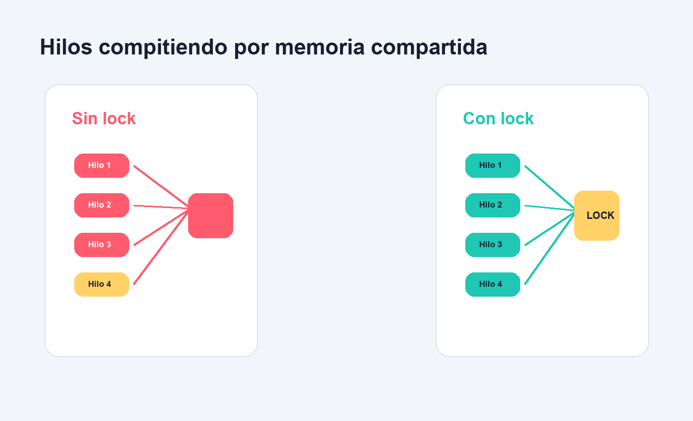

Interactividad
Acciones del usuario, respuesta del sistema, niveles de control y experiencias con sentido.
Licenciatura en Sistemas de Informacion · Plan 2021 · 6 horas semanales
Una materia para disenar, programar, probar y mejorar experiencias interactivas: de la TV digital y las interfaces actuales a la concurrencia, el paralelismo y los sistemas de alto rendimiento.
De que se trata
El programa parte de un cambio cultural y tecnico: video digital, Internet, movilidad, television, redes, plataformas y contenidos conectados. En ese escenario, programar ambientes interactivos implica comprender como una idea se transforma en una experiencia usable, comunicable, probada y sostenida por software.
Acciones del usuario, respuesta del sistema, niveles de control y experiencias con sentido.
UX, UI, navegabilidad, plataformas, prototipos y decisiones de diseno.
Procesos, multiples hilos, comunicacion, sincronizacion, depuracion y pruebas.
Arquitecturas paralelas, rendimiento, limites, metricas y alto requerimiento computacional.
Finalidad general
La cursada propone una mirada profesional: analizar experiencias existentes, disenar interfaces, programar soluciones, testear comportamiento concurrente y justificar decisiones tecnicas con evidencia.
Competencias del programa
Las competencias no se modifican: se traducen en actividades, prototipos, analisis, entregas y defensa de decisiones.
Identificar, formular y resolver problemas de informatica.
Concebir y desarrollar proyectos de software e informacion.
Planificar, ejecutar, controlar y mejorar proyectos.
Usar herramientas, lenguajes, tecnicas y entornos de desarrollo.
Proponer desarrollos tecnologicos con valor e impacto.
Trabajar en equipo, explicar decisiones y sostener criterios eticos.

Resultados de aprendizaje
Mapa de cursada
Interactividad, niveles, Ginga, DEVENDRA e interfaces audiovisuales.
Entrar Modulo 2Movil, PC, UX, UI, navegacion y maquetacion de experiencias.
Entrar Modulo 3Procesos hijo, multiples hilos de ejecucion y simulador visual.
Entrar Modulo 4IPC, pipes, FIFO, colas de mensajes y memoria compartida.
Entrar Modulo 5Locks, semaforos, monitores, deadlock, espera y coordinacion.
Entrar Modulo 6SISD, SIMD, MISD, MIMD, memoria compartida y distribuida.
Entrar Modulo 7Performance, algoritmos paralelos, Amdahl y Gustafson-Barsis.
Entrar Evaluacion integradoraDos entregas integradoras: 40 puntos + 60 puntos = 100 puntos.
Ver evaluacionEvaluacion
Para regularizar se trabajan actividades obligatorias que constituyen instancias parciales. La propuesta web organiza esas entregas en dos parciales integradores, con puntaje explicito y rubricas.
Interactividad, interfaces, analisis visual y primeros prototipos.
Concurrencia, sincronizacion, paralelismo, performance y defensa tecnica.
Idea de cursada
Esa es la energia de esta materia: convertir contenidos en experiencias interactivas y convertir codigo en comportamiento observable.